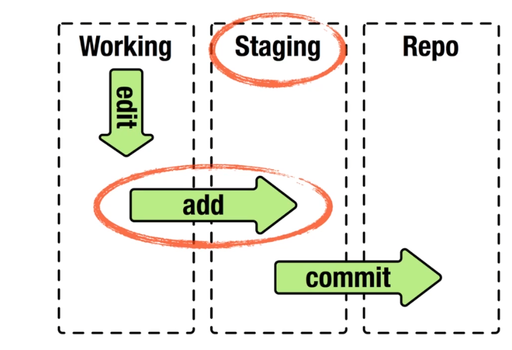

Comandos Básicos
En este capítulo vamos a adentrarnos en los comandos básicos de Git y con los que podremos realizar la gran mayoria de tareas relacionadas con este control de versiones.
¿Cómo obtener un repositorio Git?
Básicamente tenemos dos opciones para poder tener un repositorio Git
👉🏻 Inicializarlo en un directorio existente
Aquí tenemos que tener en cuenta si el directorio está vacio o ya contiene archivos y carpetas:
- Si el directorio esta vacio basta con utilizar el comando:
git init - Si el directorio ya cuenta con contenido y queremos rastrear el mismo:
$ git add .
$ git commit -m"Primer commit"
👉🏻 Clonar un repositorio existente
Existen varios tipo de repositorios en la nube (GitHub, GitLab, GitBucket) tanto con proyectos públicos como privados. Desde los repositorios públicos se nos permite descargar a local una copia para poder trabajar en ellos, mediante el comando:
git clone <URL> <miDirectorio>: Se clona a un directorio con el nombre que le he indicado.la diferencia entre clonar un proyecto o descargarlo en formato ZIP, es que clonado te traes todos los commits que se han realizado desde el comienzo.
🔁 Ciclo de vida de los archivos en Git
Dentro de este ciclo de vida podemos encontrarnos con tres estados en los que se pueden encontrar los archivos:
- Working Area: es el espacio donde se guardan los archivos y las carpetas sin rastrear.
- Staged Area: es la zona intermedia, un area de preparación donde están los archivos que han sido editados.
- Repositorio: es la zona donde se guardan todas las modificaciones y cambios realizados. Es el contenido de la carpeta oculta
.git

$ git status: permite conocer el estado de los archivos.$ git status -s: muestra el estado pero de una manera más reducida.$ git add <archivo1><archivo2><...>: comando que se utiliza para empezar a rastrear nuevos archivos.$ git add .: utilizando el punto añade todos los archivos a la vez.$ git diff: compara lo que tienes en el directorio de trabajo con lo que está en el área de preparación.$ git diff --staged: compara los cambios preparados con la última instantanea confirmada.$ git commit -m"Mensaje del commit": comando que confirma los cambios y manda los archivos a la zona del Repositorio.$ git commit -a -m"Mensaje del commit: con esta combinación de comandos nos saltamos el area intermedia de preparación.$ git checkout <archivo>: devuelve un archivo que está en el Staged Area al Working Area. (deshace los cambios).
↪️ ¿Cómo deshacer cosas?
Es bastante corriente tener que deshacer algun cambio y vamos a ver algunas de las herramientas usadas para poder hacerlo:
- Como volver atrás cuando un archivo ya ha sido confirmado, por ejemplo para agregar algún archivo que se me haya podido olvidar en la conformación.
$ git commit -m"Commit inicial"
$ git commit --amend
🚨 Puede que en el momento de deshacer esa commit se haya modificado alguno de los archivos que estaban incluidos en esa conformación.
- Como volver atrás cuando un archivo esta en el Staged Area (área de preparación) y quiero devolverlo al Working Area:
$ git reset HEAD <archivo>
- Como no mantener los cambios de un archivo que ha sido modificado, pero todavia no se ha añadido al Staged Area:
$ git checkout -- <archivo>
🚨 Este comando es peligroso, cualquier cambio realizado desaparecera.
✂ ¿Cómo eliminar un archivo?
$ git rm <archivo>: elimina el archivo del directorio de trabajo, de manera que la próxima vez aparezca como un archivo no rastreado.$ git rm -f <archivo>: si el archivo ya había sido añadido al índice hay que forzar su eliminación.$ git rm --cached <archivo>: mantiene el archivo en el directorio de trabajo pero Git no lo rastreará.$ git rm log/\*.log: elimina todos los archivos con extensión.logdentro de la carpetalog/.$ git rm \*~: elimina todos los archivos que acaben con~.
✏️ ¿Cómo cambiar el nombre a un archivo?
$ git mv <nombre> <nuevoNombre>: permite renombrar un archivo.